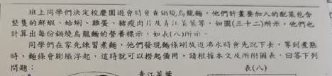
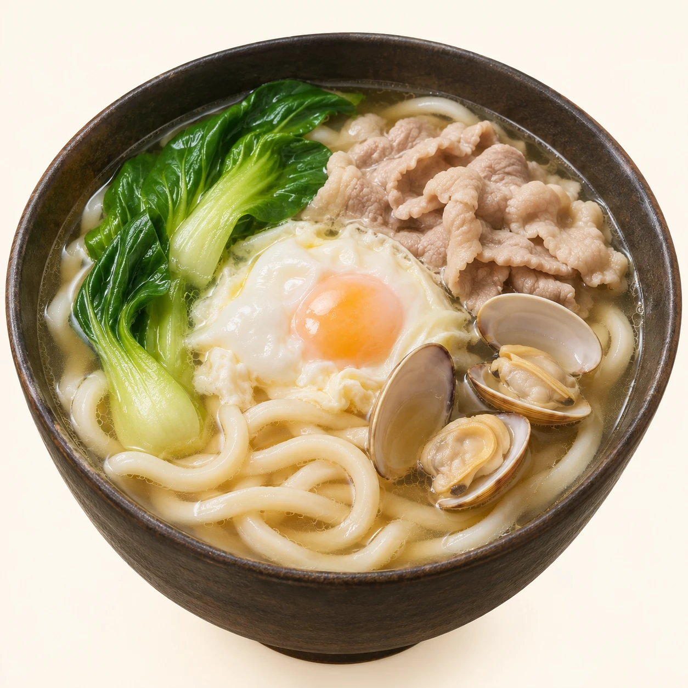
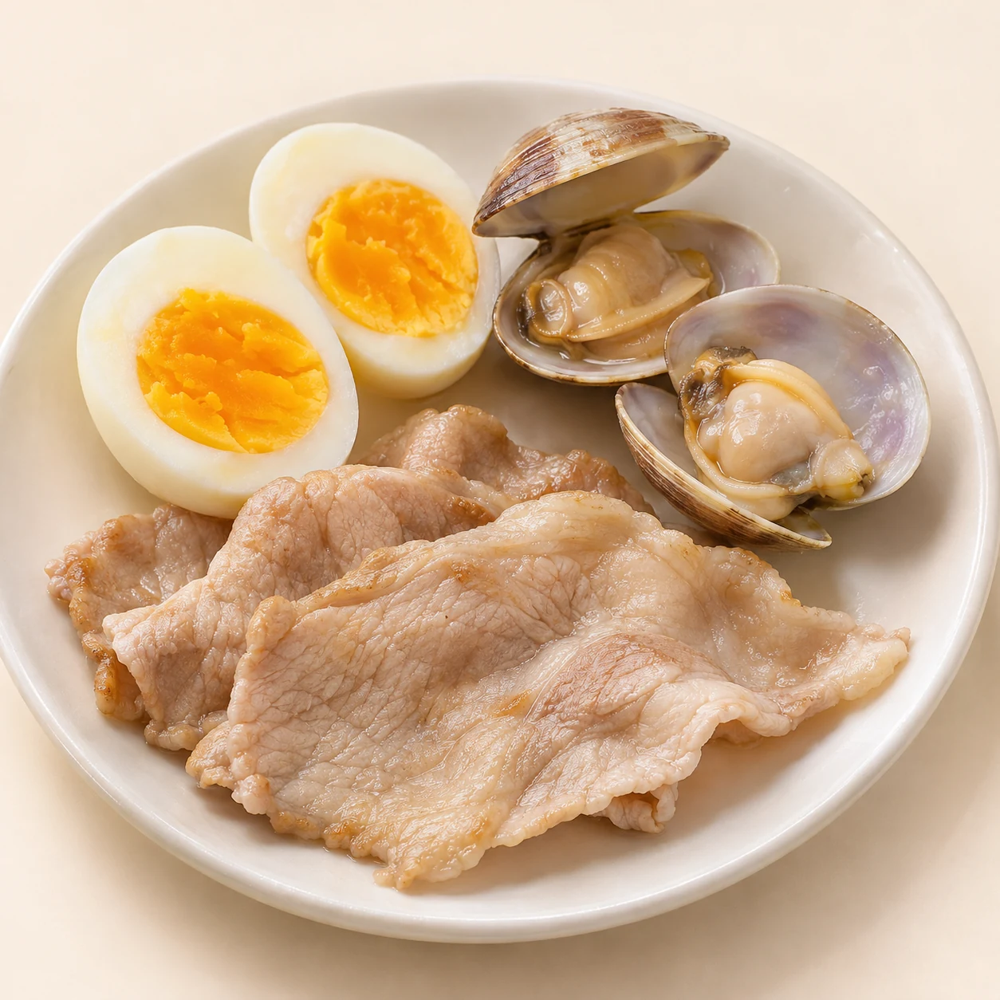
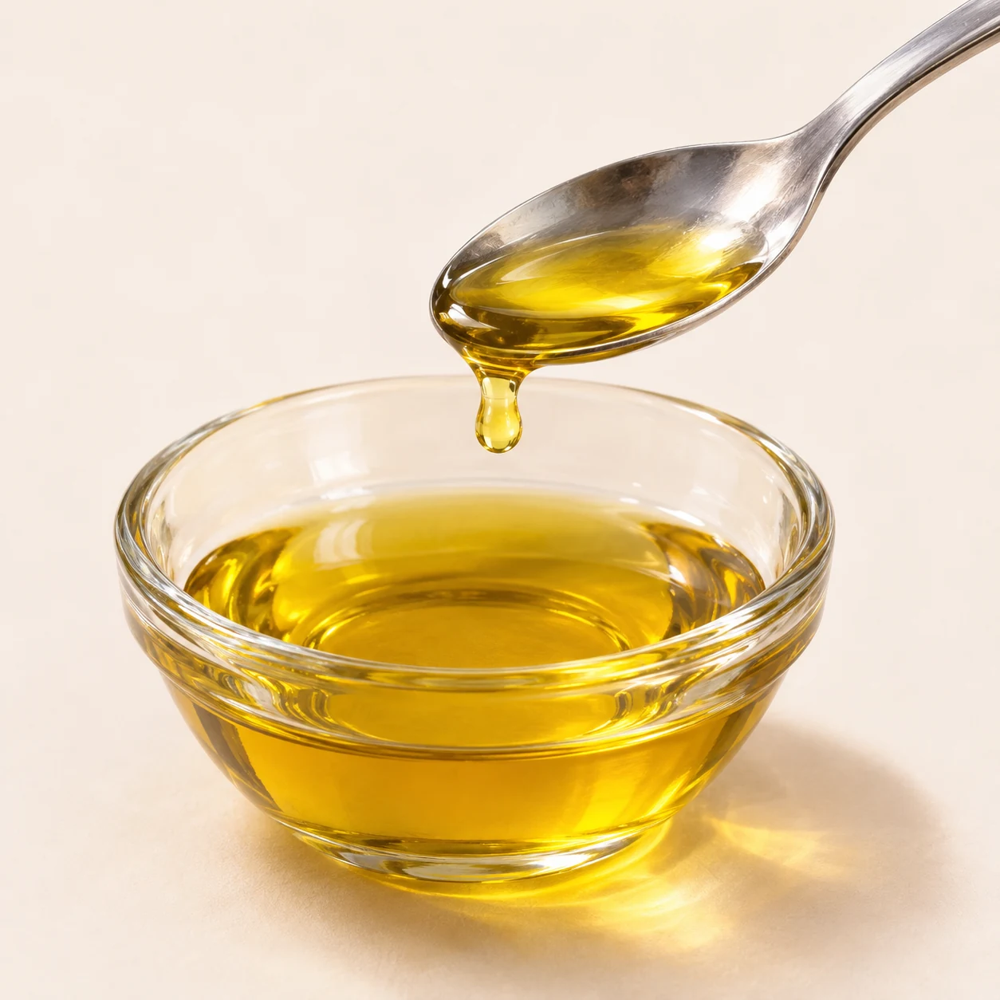
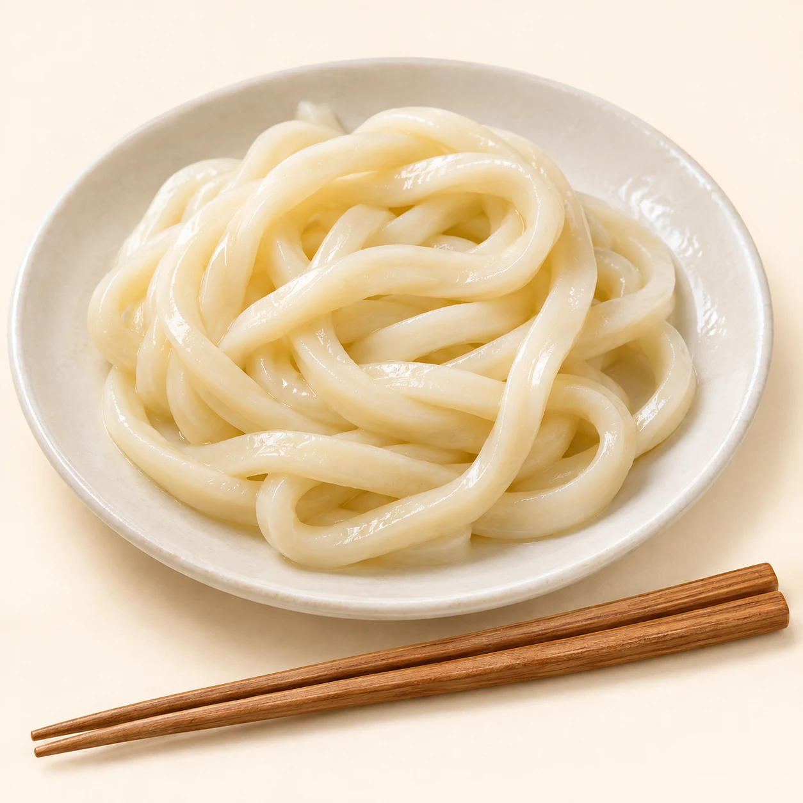
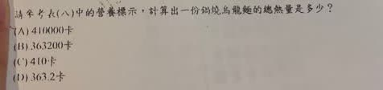
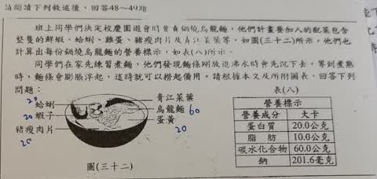

分享原卷｜第49題
完整原題
| 營養成分 | 大卡 |
|---|---|
| 蛋白質 | 20.0公克 |
| 脂肪 | 10.0公克 |
| 碳水化合物 | 60.0公克 |
| 鈉 | 201.6毫克 |

先想一想，再查看答案、解說與原圖
逐項解析
| 選項與原句 | 判讀 | 句意與判斷理由 |
|---|---|---|
| (A) 410000卡 | 應選 | 410大卡換成卡，須乘1000，得到410000卡。 |
| (B) 363200卡 | 不選 | 與蛋白質80、脂肪90及碳水化合物240大卡的加總不符。 |
| (C) 410卡 | 不選 | 410是大卡數，若寫卡則少了1000倍。 |
| (D) 363.2卡 | 不選 | 數值與正確總熱量及卡的單位均不符。 |
詳細說明與解題步驟
【先用三大營養素算熱量】
本題按國中常用的換算：蛋白質每公克4大卡、脂肪每公克9大卡、碳水化合物每公克4大卡。
蛋白質：20.0×4＝80大卡。
脂肪：10.0×9＝90大卡。
碳水化合物：60.0×4＝240大卡。
鈉是礦物質，不計入這三項供能熱量，不要把201.6毫克也乘上熱量換算值。
【加總後還要看選項的單位】
80＋90＋240＝410大卡。
1大卡＝1000卡，所以410大卡＝410000卡，選A。
C的410卡少了1000倍；不能把大卡與卡當成同一個單位。
【讀的是營養素重量】
表中20.0公克是蛋白質的總量，不是把每一種肉、蛋或海鮮的食材重量各算20公克。計算一份的熱量，直接使用本題給出的營養標示即可。
【表頭照原卷保留】
原表第二欄印「大卡」，但各列實際列的是公克、毫克的營養素含量。計算時以各列明示的重量單位為準，不把20.0公克誤讀為20.0大卡。
整份餐點情境｜計算依原表，不從照片猜重量。

① 讀營養標示，算整份熱量
第一圖為鍋燒烏龍麵情境。表中蛋白質20.0公克、脂肪10.0公克、碳水化合物60.0公克，都是整份營養素含量。原欄名雖印「大卡」，仍依各列重量單位計算；鈉201.6毫克不計入三大營養素供能。
蛋白質來源例子｜用原表營養素克數計算。

② 蛋白質：20.0×4＝80大卡
第二圖以肉、蛋、蛤蜊作含蛋白質食材的例子。計算用全份蛋白質20.0公克×每公克4大卡＝80大卡，不是把每種食材各算20公克；這些食物也含其他營養素。
脂肪來源例子｜原表10.0公克脂肪，乘9。

③ 脂肪：10.0×9＝90大卡
第三圖用油脂呈現脂肪來源的例子。全份脂肪10.0公克×每公克9大卡＝90大卡。每公克脂肪的供能數值不同於蛋白質與碳水化合物，不能三項都乘4。

④ 先算410大卡，再換成410000卡
答案 A：410000卡
- 第四圖麵類是碳水化合物來源例子；原表全份60.0公克×4＝240大卡。
- 80＋90＋240＝410大卡；1大卡＝1000卡，所以410大卡＝410000卡。
- 食材圖只幫助理解營養來源，重量以原表為準；C的410卡少1000倍。
核對註記：已依原卷或完整文字核對並獨立解題；對應教材課次未確認，歸綜合。
原圖（僅本題）

